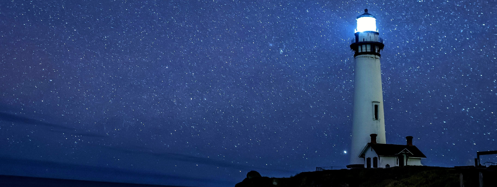
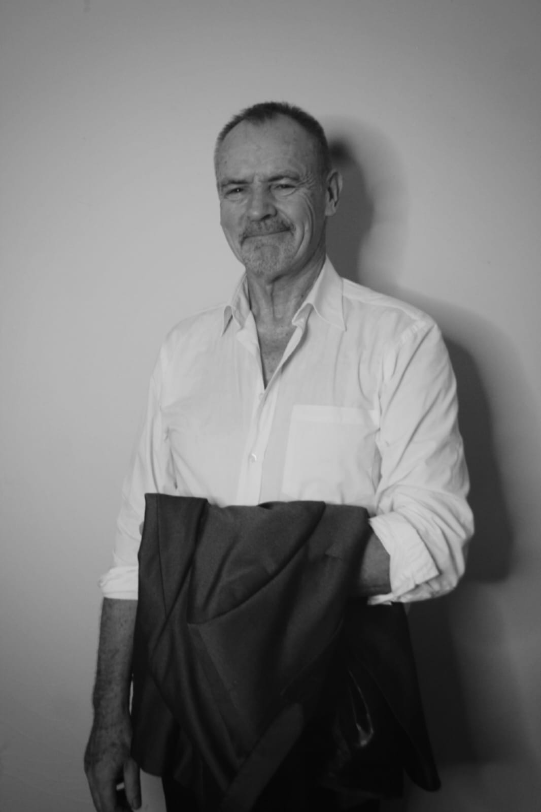

Experience:
- 20+ years of experience as a life coach, mentor, and spiritual guide
- Qualified Mediator
- Certified Reverend
- Host of Destiny Hour With Paul on East Wave Radio 702
- Advisor on California Psychics

Located in South Africa- but always as close as the phone in your hand. Paul is a passionate guide helping others navigate life's journey with clarity and purpose. He has been guiding clients for over 20 years worldwide, advising on everything from career transitions to personal growth. Paul's approach is rooted in empathy, experience, active listening, and a deep understanding of human behaviour. He believes that everyone has the potential to live a fulfilling life, and his mission is to help clients unlock that potential and create a life they love.
